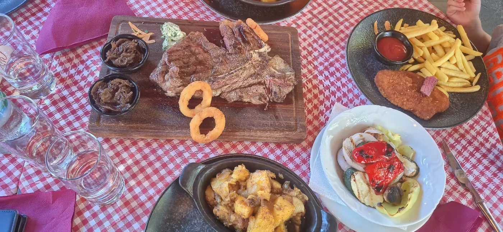
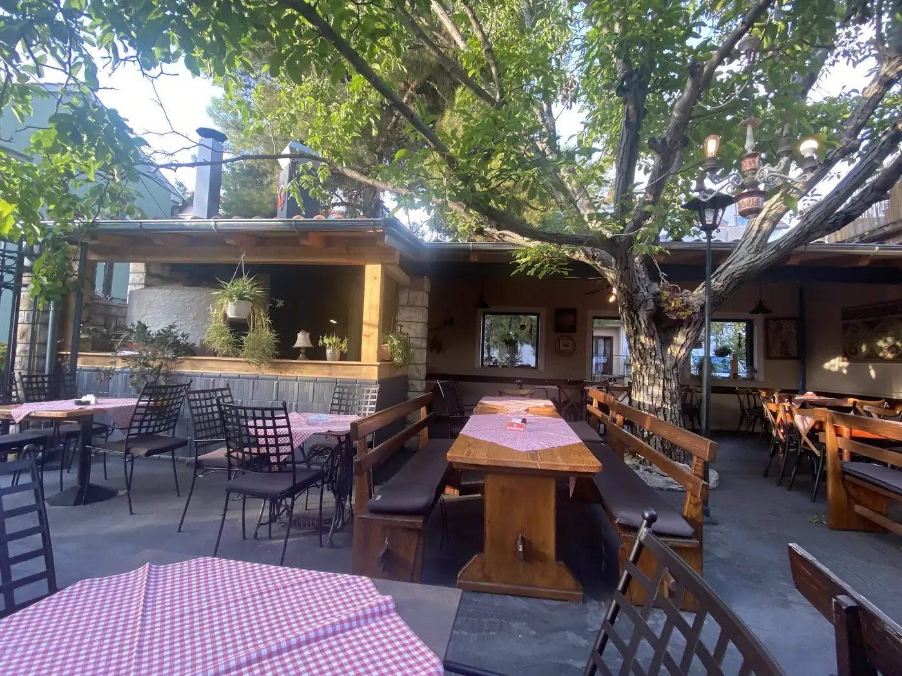

S gradela

Konoba u dvorištu u Vodicama. Steak i ćevapi s gradela, cijela riba, dagnje na buzaru i veganska jela. Svaki dan od 17 sati.
Stolovi u dvorištu oko velikog stabla, roštilj koji radi svaki dan i jelovnik na kojem se nađe i onaj tko ne jede meso.
T-bone i ramstek, ćevapi i pljeskavica, cijeli lubin ili orada, tuna i hobotnica. Porcije su velike i idu s prilogom.
Uz roštilj i ribu i veganska te vegetarijanska jela. Najtraženije su sojine šnicle s pomfritom, rižom i ajvarom.
Stolovi su u zatvorenom dvorištu, oko velikog stabla i pod fenjerima. Besplatan parking ispred, psi dobrodošli.
Uz roštilj i ribu držimo i veganska te vegetarijanska jela, pa se društvo ne mora dijeliti po konobama.

Biljni gušti, ista dalmatinska duša.
Praktične informacije prije dolaska:
Zna biti gužva, osobito ljeti — najbolje je rezervirati stol telefonom unaprijed.
Plaćanje debitnim i kreditnim karticama ili gotovinom. Ispred konobe je besplatan parking.
Razgovaramo na hrvatskom, engleskom i njemačkom — dobrodošli ste, odakle god dolazili.
“Jako ugodna atmosfera. Nudi se roštilj, steak i čak veganska hrana. Za svaku pohvalu. Osoblje je vrlo ljubazno i gostoprimljivo.”
“Fantastična hrana, ugođaj i usluga! Atmosfera ugodna kao da sjedite u dvorištu kod najboljih prijatelja.”
“Usluga top, hrana ukusna, posluga profesionalna i kulturna.”
Rezervacije idu telefonom — bez online sustava, izravno s nama. Pozovite ili pošaljite upit, javit ćemo se.
Najbrži način — nazovite i dogovorite termin u par sekundi.
📞+385 98 810 622Govorimo HR · EN · DE. Rezervacije se preporučuju, osobito tijekom ljeta.
Dr. Vladka Mačeka 2, 22211 Vodice
U srcu Vodica, lako dostupni i pješice. Dođite gladni — ostajete kao prijatelji.
Radno vrijeme: svaki dan 17:00 – 23:00 · Ul. dr. Vladka Mačeka 2, Vodice · +385 98 810 622
Konoba Roki radi svaki dan od 17:00 do 23:00 sata. Kuhinja radi tijekom cijelog radnog vremena, a konoba je otvorena i ponedjeljkom.
Za večeru je rezervacija preporučena, osobito ljeti. Rezervacije primamo telefonom na +385 98 810 622.
Ispred konobe je besplatan parking. Konoba je u Ulici dr. Vladka Mačeka 2, u mirnoj ulici nedaleko od hotela Olympia Sky.
Da. U ponudi su veganska i vegetarijanska jela, a najtraženije su sojine šnicle koje idu s prilozima kao i ostala jela: pomfrit, riža i ajvar.
Da, plaćanje je moguće debitnim i kreditnim karticama te gotovinom.
Da, psi su dobrodošli. Stolovi su u otvorenom dvorištu pa je prostora dovoljno.
Da, u ponudi je dječji jelovnik. Dvorište je zatvoreno prema ulici, a porcije su velike pa se lako dijele.
Nema. Konoba je u dvorištu u mirnoj ulici, oko 10 minuta hoda od vodičke rive. Stolovi su u hladu velikog stabla, pod fenjerima.
Da, ulaz i prostor za sjedenje pristupačni su invalidskim kolicima.
Da, u dvorištu su i veliki drveni stolovi s klupama pogodni za grupe. Za veće društvo nazovite ranije na +385 98 810 622.